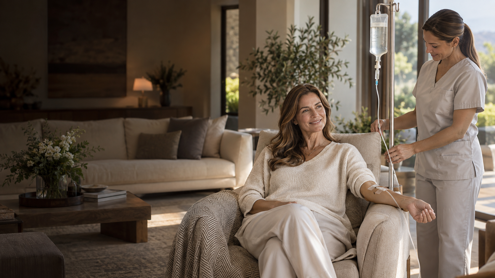

Indicación individualLa fórmula se define para cada paciente.

Sueroterapia intravenosa premium a domicilio
Recuperá tu vitalidad. Sin salir de tu casa.
Recibí un protocolo personalizado en la comodidad de tu hogar, aplicado y supervisado por enfermería profesional. La Dra. Quesada evalúa tu caso mediante una consulta presencial en su consultorio de Córdoba Capital o de manera virtual.
- Consulta en Córdoba Capital o virtual
- Kit enviado a tu domicilio
- Aplicación con enfermero
Kit completoSe prepara y envía a tu domicilio.
En tu casaCon enfermero profesional habilitado.
Comodidad y privacidadTodo cuidadosamente coordinado.
2 a 3 horasInfusión lenta, según fórmula y dosis.
Tu bienestar merece algo más
Un protocolo pensado para vos.
Cuando el cansancio, la baja vitalidad o una recuperación más lenta empiezan a sentirse en la vida cotidiana, una evaluación médica puede ayudarte a conocer qué necesita realmente tu organismo.
La Dra. Quesada revisa tus antecedentes y estudios para diseñar una fórmula, una cantidad de sesiones y un ritmo de infusión adecuados a tu caso.
Terapias y beneficios
Encontrá el protocolo que responda a lo que necesitás
Más energía, recuperación y bienestar comienzan con una evaluación personalizada. Conocé los beneficios posibles y consultá con la Dra. cuál puede ser adecuado para vos.
Programa destacado
NAD+
Se lee “NAD más”
Un programa para quienes buscan recuperar energía, claridad y vitalidad mediante un protocolo definido por la Dra.
- 01Energía y vitalidad
Puede favorecer la producción de energía celular y ayudar a recuperar el impulso cotidiano.
- 02Claridad mental
Acompaña la concentración y el bienestar frente a la sensación de fatiga mental.
- 03Cuidado celular
Participa en procesos metabólicos relacionados con la reparación y el funcionamiento celular.
- 04Recuperación física
Puede acompañar la recuperación después de períodos de gran exigencia.
- 05Envejecimiento saludable
Orientado a sostener la vitalidad y el bienestar a través del tiempo.
Indicación específica
Quelación
Un protocolo médico para personas con exposición o acumulación de determinados metales confirmada mediante evaluación y estudios. El tratamiento busca unir esos metales y facilitar su eliminación del organismo.
- 01Reducción de metales específicos
Ayuda a disminuir la carga de los metales identificados en los estudios y contemplados en la indicación médica.
- 02Bienestar físico y mental
Cuando existe una acumulación confirmada, puede acompañar la mejoría de manifestaciones asociadas, como fatiga o dificultad para concentrarse.
- 03Abordaje dirigido
El agente quelante y el protocolo se seleccionan de acuerdo con el metal detectado y las necesidades de cada paciente.
- 04Plan personalizado
La fórmula, las dosis y el ritmo de goteo se definen según la historia clínica y los estudios previos.
- 05Seguimiento médico
La respuesta y la continuidad se controlan durante todo el programa.
Fórmula personalizada
Cóctel de vitaminas personalizado
Una combinación que puede incluir vitamina C, vitaminas del complejo B, minerales, aminoácidos y otros nutrientes, definida según tu historia clínica, tus objetivos y estudios.
- 01Energía y vitalidad
Puede acompañar el metabolismo energético y ayudarte a sentir mayor impulso.
- 02Hidratación
Favorece la reposición de líquidos y nutrientes de acuerdo con la fórmula indicada.
- 03Apoyo a las defensas
Brinda nutrientes relacionados con el funcionamiento normal del sistema inmunológico.
- 04Recuperación física
Puede acompañar la recuperación después del ejercicio o de etapas de alta exigencia.
- 05Claridad y bienestar
Orientado a acompañar la concentración y el bienestar general.
- 06Fórmula a medida
Los componentes y las dosis se seleccionan para las necesidades de cada paciente.
Tu cuerpo te está pidiendo un cambio
Invertí en tu vitalidad, tu bienestar físico y tu calidad de vida.
Cuando la energía ya no acompaña tu ritmo de vida, una evaluación médica personalizada puede ser el primer paso para volver a sentirte bien.
- Cansancio o falta de vitalidad
- Recuperación más lenta
- Estrés físico y mental
- Interés en acompañar un envejecimiento saludable
- Preferencia por una atención cómoda y privada
Simple, cómodo y personalizado
Todo se organiza para que lo recibas en tu casa
Desde la consulta hasta la aplicación, coordinamos cada etapa para que puedas acceder al programa con privacidad, comodidad y acompañamiento profesional.
Quiero coordinar mi consulta- ✓Consulta presencial o virtual
Atendete con la Dra. en Córdoba Capital o conversá con ella desde donde estés.
- ✓Evaluación y estudios
Se revisan antecedentes y análisis antes de indicar.
- ✓Envío del kit completo
El protocolo indicado se envía al domicilio coordinado.
- ✓Aplicación en tu casa
Un enfermero habilitado realiza y supervisa la infusión.
- ✓Seguimiento médico
La continuidad se evalúa según tu respuesta.
Enfermería profesional
Elegí cómo coordinar la aplicación
En ambos casos, la administración debe estar a cargo de un profesional de enfermería habilitado y respetar exactamente la indicación médica.
Enfermero coordinado
Podemos ayudarte a coordinar un profesional para concurrir a tu domicilio.
El servicio de enfermería se abona por separado.Enfermero de confianza
También podés elegir un profesional habilitado cercano a tu domicilio.
Debe recibir y respetar la indicación de la Dra.Información importante
La seguridad también forma parte de una experiencia premium
La comodidad del domicilio no cambia el carácter médico de una infusión intravenosa.
Nunca autoadministrar. La colocación y el control corresponden a enfermería profesional.
No acelerar el goteo. El ritmo indicado debe respetarse durante toda la aplicación.
Informar cualquier malestar. Ante síntomas, el profesional debe detener la infusión y comunicarse con la médica.
Evaluar cada antecedente. Enfermedades, medicación, alergias y estudios pueden cambiar o contraindicar un protocolo.
Respuestas claras
Preguntas frecuentes
La evaluación médica es el espacio para confirmar qué alternativa puede tener sentido en tu caso.
¿Puedo elegir directamente qué suero hacerme?
No. Primero se realiza la consulta y se revisan los estudios. La Dra. define si existe una indicación, qué fórmula corresponde y cuántas sesiones considerar.
¿La Dra. realiza la aplicación en mi casa?
La Dra. indica y supervisa médicamente el programa. La aplicación domiciliaria la realiza un profesional de enfermería habilitado, coordinado por el equipo o elegido por el paciente.
¿Cuánto tiempo lleva cada sesión?
Como referencia, entre dos y tres horas. Puede variar según la fórmula, la dosis y el ritmo de infusión indicado para cada persona.
¿Se puede pasar el suero más rápido?
No debe acelerarse. El paciente y el profesional deben respetar el ritmo prescripto. Ante palpitaciones, dolor, falta de aire, mareo u otro malestar, corresponde detener la infusión y comunicarse con la médica; si el cuadro es intenso, solicitar atención de urgencia.
¿El enfermero está incluido?
No. La enfermería se abona por separado. Podés solicitar que el equipo coordine un profesional o elegir un enfermero habilitado cercano a tu domicilio.
¿Trabajan con obras sociales?
No. La consulta, el kit y la enfermería son prestaciones particulares. El presupuesto se informa una vez definido el protocolo.
Primer paso · Consulta con la Dra.
Elegí una atención médica que llega hasta tu casa.
Solicitá tu consulta presencial en Córdoba Capital o virtual, conocé qué protocolo puede ser adecuado para vos y recibí una propuesta personalizada.
Consultar por WhatsApp
Conocé a la Dra., el consultorio y el mapa
Atención exclusivamente particular · Consulta presencial en Córdoba Capital o virtual · Envío del kit y enfermería sujetos a coordinación